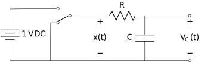

4 CT Systems as Linear Constant Coefficient Differential Equations
Recall a system is a transformation of signals, turning the input signal into the output signal. While this might seem like a new concept to you, you already know something about them from your differential equations course, i.e. MATH 2214 and your circuits course.
For example, consider the following circuit:

where the switch moves position at \(t = 0\). The governing equation for the circuit when \(t < 0\) is \[\frac{dV_c}{dt}(t) + \frac{1}{RC}V_c(t) = 0\] a homogeneous differential equation of first-order. From a DC analysis, the initial condition on the capacitor voltage is \(V_C(0^-) = 0\), so there is no current flowing prior to \(t = 0\) and the solution is \(V_C(t) = 0\) for \(t < 0\).
After the switch is thrown, the governing equation for the circuit when \(t \geq 0\) is \[\frac{dV_c}{dt}(t) + \frac{1}{RC}V_c(t) = \frac{1}{RC}\] Since the voltage across the capacitor cannot change instantaneously \(V_C(0^-) = V_C(0^+) = 0\), giving the auxillary condition necessary to solve this equation, which has the form \[V_C(t) = A + Be^{-\frac{1}{RC}t}\] Using the auxillary condition we find \[V_C(0) = A + Be^{-\frac{1}{RC}0} = A + B = 0 \mbox{ which implies } B = -A\] Subsitution back into the differential equation and equating the coefficients gives \(A = 1\). Thus the voltage for \(t \geq 0\) is \[V_C(t) = 1 - e^{-\frac{1}{RC}t}\]
Suppose we consider the voltage after the switch as the input signal \(x(t)\) to the system composed of the series RC. As we have seen previously a mathematical model of the switch is the unit step \(x(t) = u(t)\). Suppose we consider the capacitor voltage at the output of the system, so that \(y(t) = V_C(t)\). Then we can consider the system to be represented by the linear, constant-coefficient differential equation \[\frac{dy}{dt}(t) + \frac{1}{RC}y(t) = \frac{1}{RC}x(t)\] where \(x(t) = u(t)\) and the solution \(y(t)\) is the step response \[y(t) = \left(1 - e^{-\frac{1}{RC}t}\right)u(t)\]
As we will see later this representation of systems is central to the course, so we take some time here to review the solution of such equations.
4.1 Solving Linear, Constant Coefficient Differential Equations
A linear, constant coefficient (LCC) differential equation is of the form \[a_0\, y + a_1\, \frac{dy}{dt} + a_2\, \frac{d^2y}{dt^2} + \cdots + a_N\, \frac{d^Ny}{dt^N} = b_0\, x + b_1\, \frac{dx}{dt} + b_2\, \frac{d^2x}{dt^2} + \cdots + b_M\, \frac{d^Mx}{dt^M}\] which can be written compactly as \[\sum\limits_{k = 0}^{N} a_k\, \frac{d^ky}{dt^k} = \sum\limits_{k = 0}^{M} b_k\, \frac{d^kx}{dt^k}\]
It is helpful to clean up this notation using the derivative operator \(D^n = \frac{d^n}{dt^n}\). For example \(D^2y = \frac{d^2y}{dt^2}\) and \(D^0 y= y\). To give for form as \[\sum\limits_{k = 0}^{N} a_k\, D^k y = \sum\limits_{k = 0}^{M} b_k\, D^k x\]
We can factor out the derivative operators \[a_0y + a_1Dy + a_2D^2y + \cdots + a_ND^Ny = b_0\, x + b_1\, Dx + b_2\, D^2x + \cdots + b_M\, D^M x\] \[\underbrace{\left(a_0 + a_1D + a_2D^2 + \cdots + a_ND^N\right)}_{\text{Polynomial in } D, Q(D)} y = \underbrace{\left(b_0 + b_1 D + b_2 D^2 + \cdots + b_M D^M\right)}_{\text{Polynomial in } D, P(D)} x\] to give:
\[Q(D)y = P(D)x\] You learned how to solve these in differential equations (Math 2214) as \[y(t) = y_\text{h}(t) + y_\text{p}(t)\]
The term \(y_\text{h}(t)\) is the solution of the homogeneous equation \[Q(D)y = 0\] Given the \(N-1\) auxillary conditions \(y(t_0) = y_0\), \(Dy(t_0) = y_1\), \(D^2y(t_0) = y_2\), up to \(D^{N-1}y(t_0) = y_{N-1}\).
The term \(y_\text{p}(t)\) is the solution of the particular equation \[Q(D)y = P(D)x\] for a given \(x(t)\).
Rather than recapitulate the solution to \(y_\text{h}(t)\) and \(y_\text{p}(t)\) in the general case we focus on the homogeneous solution \(y_\text{h}(t)\) only. The reason is that we will use the homogeneous solution to find the impulse response below and take a different approach to solving the general case for an arbitrary input using the impulse response and convolution (next week).
To solve the homogenous system:
Step 1: Find the characteristic equation by replacing the derivative operators by powers of an arbitrary complex variable \(s\). \[Q(D) = a_0 + a_1D + a_2D^2 + \cdots + a_ND^N\] becomes \[Q(s) = a_0 + a_1s + a_2s^2 + \cdots + a_Ns^N\] a polynomial in \(s\) with \(N\) roots \(s_i\) for \(i = 1, 2, \cdots, N\) such that \[(s - s_1)(s-s_2)\cdots(s-s_N) = 0\]
Step 2: Select the form of the solution, a sum of terms corresponding to the roots of the characteristic equation.
For a real root \(s_1\in \mathbb{R}\) the term is of the form \[C_1 e^{s_1 t}.\]
For a pair of complex roots (they will always be in pairs) \(s_{1,2} = a \pm jb\) the term is of the form \[C_1 e^{s_1 t} + C_2 e^{s_2 t} = e^{a t}\left(C_3\cos(bt) + C_4\sin(bt)\right) = C_5 e^{a t}\cos(bt + C_6).\]
For a repeated root \(s_1\), repeated \(r\) times, the term is of the form \[e^{s_1 t} (C_0 + C_1 t + \cdots + C_{r-1} t^{r-1}).\]
Step 3: Solve for the unknown constants in the solution using the auxillary conditions.
We now examine two common special cases, when \(N=1\) (first-order) and when \(N=2\) (second-order).
4.1.1 First-Order Homogeneous LCCDE
Consider the first order homogeneous differential equation \[\frac{dy}{dt}(t) + ay(t) = 0 \mbox{ for } a \in \mathbb{R}\] The characteristic equation is given by \[s + a = 0\] which has a single root \(s_1 = -a\). The solution is of the form \[y(t) = Ce^{s_1 t} = Ce^{-a t}\] where the constant \(C\) is found using the auxillary condition \(y(t_0) = y_0\).
Example
Consider the homogeneous equation \[\frac{dy}{dt}(t) + 3y(t) = 0 \mbox{ where } y(0) = 10\] The solution is \[y(t) = Ce^{-3 t}\] To find \(C\) we use the auxillary condition \[y(0) = Ce^{-3 \cdot 0} = C = 10\] and the final solution is \[y(t) = 10e^{-3 t}\]
4.1.2 Second-Order Homogeneous LCCDE
Consider the second-order homogeneous differential equation \[\frac{d^2y}{dt^2}(t) + a\frac{dy}{dt}(t) + by(t) = 0 \mbox{ for } a,b \in \mathbb{R}\] The characteristic equation is given by \[s^2 + as + b = 0\]
Let’s look at several examples to illustrate the functional forms.
Example
\[\frac{d^2y}{dt^2}(t) + 7\frac{dy}{dt}(t) + 10y(t) = 0\] The characteristic equation is given by \[s^2 + 7s + 10 = 0\] which has roots \(s_1 = -2\) and \(s_2 = -5\). Thus the form of the solution is \[y(t) = C_1e^{-2t} + C_2e^{-5t}\]
Example
\[\frac{d^2y}{dt^2}(t) + 2\frac{dy}{dt}(t) + 5y(t) = 0\] The characteristic equation is given by \[s^2 + 2s + 5 = 0\] which has complex roots \(s_1 = -1+j2\) and \(s_1 = -1-j2\). Thus the form of the solution is \[y(t) = e^{-t}\left(C_1\cos(2t) + C_2\sin(2t)\right)\]
Example
\[\frac{d^2y}{dt^2}(t) + 2\frac{dy}{dt}(t) + y(t) = 0\] The characteristic equation is given by \[s^2 + 2s + 1 = 0\] which has a root \(s_1 = -1\) repeated \(r=2\) times. Thus the form of the solution is \[y(t) = e^{-t}\left(C_1 + C_2t\right)\]
In each of the above cases the constants, \(C_1\) and \(C_2\), are found using the auxillary conditions \(y(t_0)\) and \(y\prime(t_0)\).
4.2 Finding the impulse response of a system described by a LCCDE
As we will see next week an important response of a system is the one that corresponds to an impulse input, i.e. the impulse response \(y(t) = h(t)\) when \(x(t) = \delta(t)\). Thus we focus here on a recipe for solving LCCDEs for this special case when \(M \leq N\). We will skip the derivation of why this works.
Our goal is to find the solution to \(Q(D)y = P(D)x\) when \(x(t)=\delta(t)\).
Step 1: Rearrange the LCCDE so that \(a_N = 1\), i.e. divide through by \(a_N\) to put it into a standard form.
Step 2: Let \(y_h(t)\) be the homogeneous solution to \(Q(D)y_h = 0\) for auxillary conditions \[D^{N-1}y_h(0^+) = 1 \; , \; D^{N-2}y_h(0^+) = 0 \; , \; \text{etc.} \; y_h(0^+) = 0\]
Step 3: Assume a form for \(h(t)\) given by: \[h(t) = \underbrace{b_N\delta(t)}_{=0 \text{ unless } N=M} + \underbrace{\left[ P(D)y_h\right]}_{\text{apply } P(D) \text{ to } y_n(t)}u(t)\]
Recall from above the homogeneous solution depends on the roots of the characteristic equation \(Q(D) = 0\).
roots are either real, or
roots occur in complex conjugate pairs, or
repeated roots.
Example
Find the impulse response of the LCCDE \[2\frac{dy}{dt}(t) + 2y(t) = 2x(t)\] In the standard for the LCCDE is \[\frac{dy}{dt}(t) + y(t) = x(t)\] The characteristic equation is given by \[s + 1 = 0\] which has a single root \(s_1 = -1\). The solution is of the form \[y_h(t) = Ce^{-t}\] with the special auxillary condition \(y(0) = 1\), so that \[y_h(t) = e^{-t}\] Since \(P(D) = 1\) and \(N = 1 \neq M = 0\) the impulse response is \[h(t) = \underbrace{b_N\delta(t)}_{=0} + \left[ \underbrace{P(D)}_{1}y_h(t)\right]u(t) = e^{-t}u(t)\]
Example
Find the impulse response of the LCCDE \[\frac{dy}{dt}(t) + y(t) = \frac{dx}{dt}(t) + x(t)\] It is already in the standard form. The homogeneous solution is the same as in Example 1, \[y_h(t) = e^{-t}\] however now \(M = N = 1\) with \(b_1 = 1\) and \(P(D) = D+1\). Thus, the impulse response is \[h(t) = \underbrace{b_N}_{=1}\delta(t) + \left[ \underbrace{P(D)}_{D+1}y_h(t)\right]u(t) = \delta(t) + \left\{[D+1]e^{-t}\right\}u(t) = \delta(t) + [- e^{-t} + e^{-t}]u(t) = \delta(t)\]
Example
Find the impulse response of the LCCDE \[\frac{d^2y}{dt^2}(t) + 7\frac{dy}{dt}y(t) + 10y(t) = x(t)\] It is already in the standard form. The characteristic equation is given by \[s^2 + 7s + 10 = 0\] which has roots \(s_1 = -2\) and \(s_2 = -5\). Thus the form of the solution is \[y_h(t) = C_1e^{-2t} + C_2e^{-5t}\] The special auxillary conditions are \(y_h(0) = 0\) and \(y^\prime_h(0) = 1\). Using these conditions \[y_h(0) = C_1e^{-2t} + C_2e^{-5t} |_{t = 0} = C_1 + C_2 = 0\] \[y^\prime_h(0) = -2C_1e^{-2t} - 5C_2e^{-5t} |_{t = 0} = -2C_1 -5C_2 = 1\] Solving for the constants gives \(C_1 = \frac{1}{3}\) and \(C_2 = -\frac{1}{3}\). Since \(P(D) = 1\) and \(N = 2 \neq M = 0\) the impulse response is \[h(t) = \underbrace{b_N\delta(t)}_{=0} + \left[ \underbrace{P(D)}_{1}y_h(t)\right]u(t) = \frac{1}{3} e^{-2t}u(t) - \frac{1}{3} e^{-5t}u(t)\]